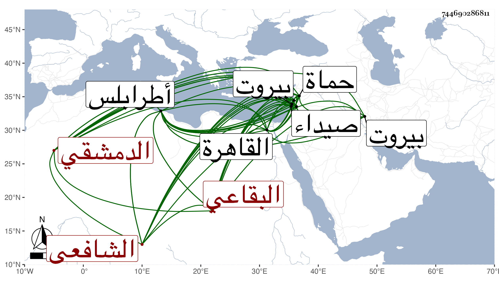

0902Sakhawi.DawLamic.ITO20230111-ara1.EIS1600.744690286811
Biography ID: 744690286811
إبراهيم بن أحمد بن رجب بن محمد بن عثمان بن جميل بن محمد بن أحمد بن عثمان بن سعادة بن عيسى بن موسى أبي البركات بن عدي بن مسافر برهان الدين أبو إسحاق بن الشرف البقاعي الدمشقي الشافعي والد الشهاب أحمد الآتي وأبوه ويعرف بالزهري لكونه سبط الشهاب الزهري بل يجتمع معه أيضا في أحمد بن عثمان . ولد في سنة سبع وسبعين وسبعمائة واشتغل قليلا وولى بعد قضاء طرابلس دون شهر ثم عزل ثم أعيد فلم يمكن من المباشرة ثم ولى قضاء صيداء مدة ثم سافر إلى القاهرة للسعي في طرابلس فلم يحصل له فولى كتابة سرصفد ثم أضيف إليه القضاء بها ثم استعفى منها لقلة معلومها مع أنه كان باشر قضاءها مباشرة حسنة فيما نقل عن التقى بن قاضي شهبة ثم أعيد لقضاء صيداء ثم عزل وولى قضاء حماه مرة بعد أخرى وكان قاضيها في سنة إحدى وثلاثين ثم قدم دمشق وسعى في النيابة بها أيام الشهاب بن المحمرة فلم يجبه فلما استقر ابن البارزي في سنة خمس وثلاثين استنابه ثم ناب لمن بعده وأخذ خطابة بيروت من القضاة بل أخذ لولده قضاءها فجرت له أمور وشكى فعزل ولده فتولى هو قضاءها وتوجه إليها ليصلح بين ولده وبين غرمائه فما تيسر له ذلك واخترمته المنية يقال من حمرة طلعت فيه في آخر نهار الثلاثاء حادي عشرى صفر سنة أربعين قال التقى بن قاضي شهبة : كان جيد العقل كثير المداراة محبا في الطلبة مساعدا لهم في حشمة وكرم وضيق في غالب عمره وتحمله الدين قال ولم يكن فيه عيب أعظم من قلة العلم .
